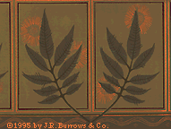

|
|
|
Persis WallTrimmed width: 21"
Repeat: 21" drop match
Roll size: 6 yards long,.
Price per roll: $ 135.00
"Persis Wall", an English Design. An anonymous English design representative of the Aesthetic Movement and early Arts & Crafts Movement. The figure appears as a random spray of eucalyptus leaves, interspersed with gilt blossoms that appear and fade across the wall. It is a particularly effective pattern on which to hang artwork, or in hallways and rooms with walls cut up by many doors and windows. The original was found in under woodwork in the old shop of Burrows & Co. in Boston, and historic photographs show the same design in a villa near Sidney, Australia, where it had been installed around 1880. 21" wide with a drop match of 21". 6 yard long rolls, covering 30 square feet. 6 yard long rolls, covering 30 square feet. Hand printed in New England. Offered in shades of sage green (the document colorway), terra cotta, pale gold on cream, and celadon green. A colorway of green leaves on a deep lacquer green ground is available by special order. $135.00 per roll.
|
|
|
|
 |
|
Persis FriezeTrimmed width: 11" high
Repeat size: 9" to 10 1/2"
Printed twice across
Price per yard: $ 30.00
"Persis Frieze" A companion to Persis Wall, the frieze was inspired by a stencil in an early 1880's house in California. The geometric pattern of the frieze makes a successful counterpoint with the random nature of the wall pattern. Frieze trims to 11" high and is printed with 2 side by side on the roll, and it is sold by the yard. Hand printed in New England. Offered in shades of sage green, terra cotta, pale gold on cream, and celadon green. $ 30.00 per yard.
|
|
|
Persis CeilingTrimed width: 21"
Repeat size: 21" drop match
Roll size: 6 yards long, covering approximately 30 sq. ft.
Price per roll: $ 115.00
"Persis Ceiling" A companion to Persis Wall and inspired by the crazed pattern effect traditional to Japanese design, this paper is equally successful on the ceiling or as a wallpaper. 21" wide with a 21" drop match repeat. 6 yard long rolls covering 30 square feet. Hand printed in New England. Offered in light shades of sage green, terra cotta, pale gold on cream and celadon green. $115.00 per roll.
Return to Burrows Studio Wallpaper designs
Go to J.R. Burrows & Company Main Page